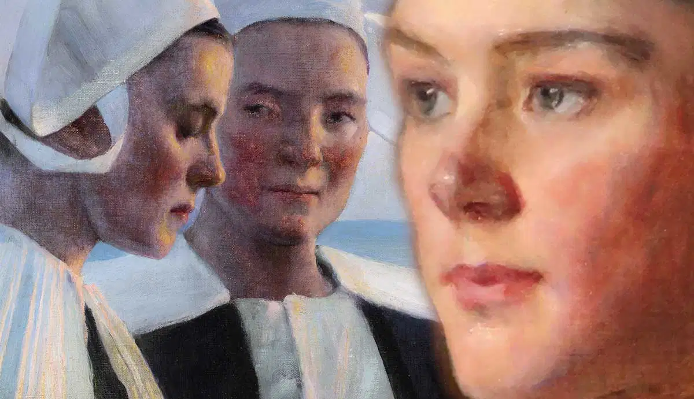
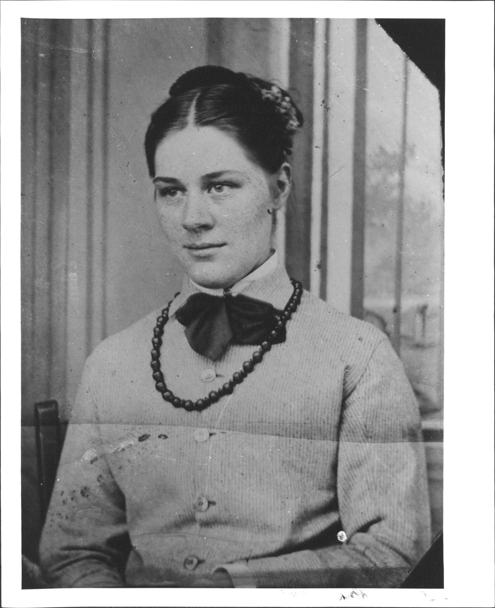
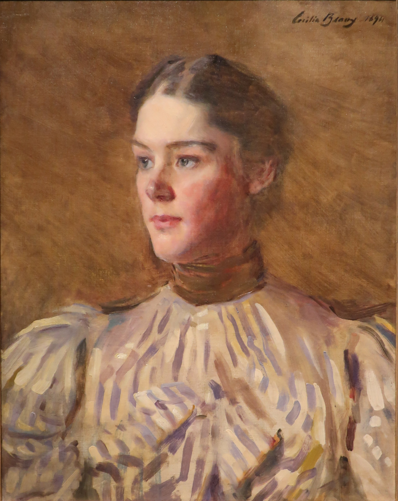
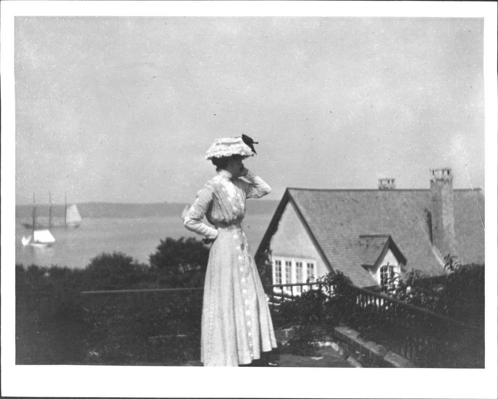
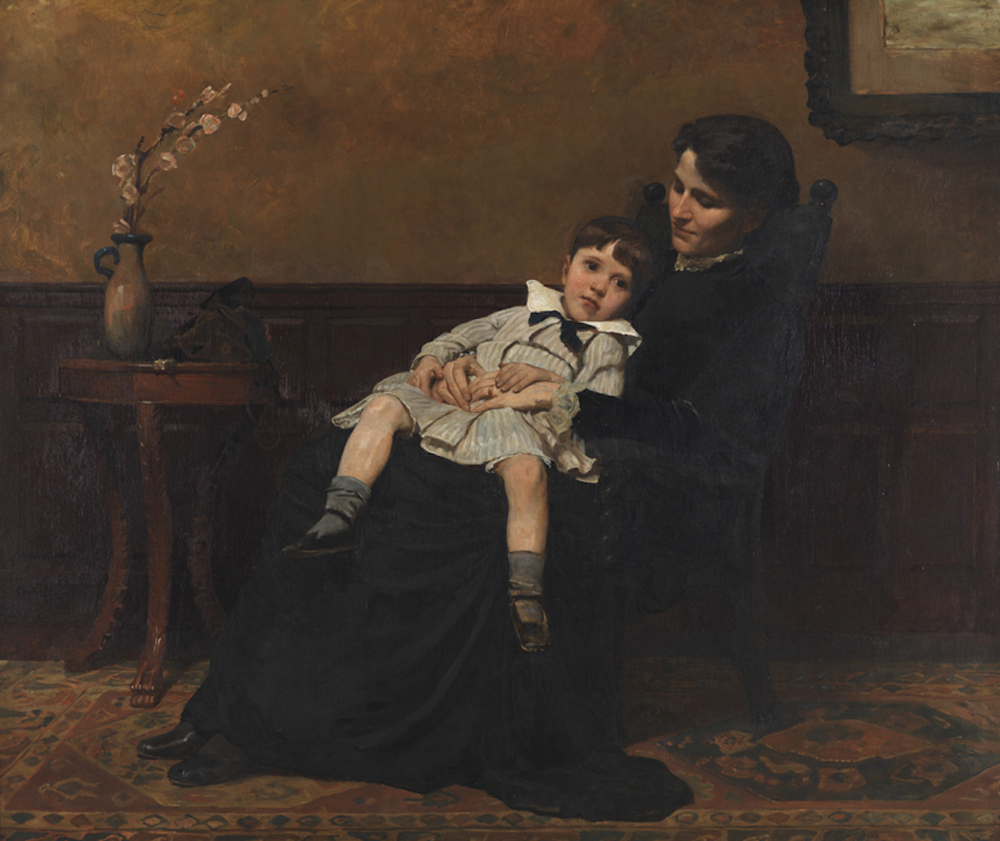

Cecilia Beaux: the life and work of an American Portraitist
Cecilia Beaux was a prominent American portraitist, who became known for her realistic and elegant depictions of the bourgeoisie.

Cecilia Beaux (1855-1942) was a very successful female painter, who managed to obtain a career equivalent to that of many male artists of her time. She won several prizes for her art and received numerous prestigious commissions. She was asked to paint a portrait of First Lady Edith Roosevelt. Read on to learn what inspired Cecilia to become an artist and how she managed to become so well-known in a male-dominated art world.
Cecilia Beaux’s Early Life

Cecilia Beaux was born in Philadelphia to a middle-class family, as the child of Jean Adolphe Beaux and Cecilia Kent Leavitt. Beaux’s father was a silk manufacturer of French descent, while her mother, who was the daughter of a prominent businessman in New York, worked as a teacher. Beaux had an older sister named Aimée Ernesta Etta.
Beaux’s mother passed away during childbirth after contracting a puerperal fever. Heavily grieving the loss of his wife, Jean Adolphe decided to return to France and leave his daughters with their maternal grandmother and aunts Eliza and Emily. The fact that Beaux was always referred to by him as Leilie, was an indication of how much he struggled with the loss of his wife, who was also called Cecilia.
As it turned out, Beaux’s grandmother and aunts were remarkably progressive women who saw real value in the education of girls as well as in any artistic pursuits. One of Beaux’s aunts even worked as a music teacher, financially contributing to the household. This upbringing was especially beneficial to Beaux, who showed a talent for drawing. Perhaps she inherited it from her father, who drew fanciful sketches of animals for his daughters when he came to Philadelphia.
However, as it turned out, Beaux’s interest in the arts went much deeper than that of her father. This became obvious to Beaux when she was attending Misses Lyman’s School, between the age of fourteen and sixteen. During these years, Beaux couldn’t afford the extra fees needed for art classes. Yet it was the absence of art education that made her even more aware of her desire to pursue an artistic career.

When Beaux finished her education at the Lyman’s School her whole family agreed that she must get into an art school. One person, in particular, proved very important to Beaux. It was William Foster Biddle, also referred to as Uncle Willie, who was married to her aunt Emily. The two sisters lived with the married couple. Biddle, a very kind and generous man, financially supported Beaux’s education at the Lyman’s School and continued to support her art classes.
He even arranged for her to study with their distant relative Catherine Drinker Janvier, who was an accomplished artist and writer. Later, these studies were followed by training at Francis Adolf van der Wielen’s Art School. From this Dutch realist painting, Beaux learned about linear and aerial perspective and drawing shadows. Finally, she also received private lessons from William Sartain. Beaux soon developed into a skilled painter.

Although raised by the same people, Cecilia Beaux and her sister Etta had different interests and ended up living very different lives. Etta got married and became the mother of six children. Beaux however decided to devote herself to art, so she decided not to marry. After all, marriage meant that a woman had to be devoted to her husband, as well as to her future children. Fortunately, her family supported her chosen path.
Cecilia Beaux’s Life as a Professional Artist

Cecilia Beaux’s art education was just the starting point of her artistic endeavors. When Van der Wielen handed over his art school to Catherine Drinker, she in turn gave Beaux her old position as the drawing teacher at Miss Sandford’s School. During this period, when Beaux was eighteen years old, she also started giving out private drawing lessons.
In 1883, after a decade of teaching, Beaux opened a studio in Philadelphia, where she created many paintings. Her first major work was a full-length portrait of her sister and nephew titled Les derniers jour d’enfance (The last days of Infancy). Throughout the years, her works were exhibited in various places like the Pennsylvania Academy of the Fine Arts in 1885 or the Paris Salon in 1886 and 1896.
Drawn to Europe, Beaux decided to study there in 1888. She took an introductory class at the Académie Julien in Paris, as well as classes from artists like William-Adolphe Bouguereau and Tony Robert Fleury. She painted Twilight Confidences during her summer in France. When Beaux returned to Philadelphia, she was seen as one of the best portrait painters in the city. Subsequently, she was appointed as the first female instructor at the Pennsylvania Academy of Fine Art in 1895. Here, she would teach drawing and painting for the next twenty years.

Different to what some expect, Beaux’s life and career didn’t show many similarities to that of Mary Cassatt. While both Beaux and Cassatt were born in Philadelphia and painted in styles that were based on impressionism, they ended up working in very different places. They also had different theoretical viewpoints, as well as different approaches to art. The fact that they were both ambitious women artists from Philadelphia remains the only similarity between the two.
Beaux’s works instead show more similarities to those made by some of her male colleagues like John Singer Sargent and William Merritt Chase. Sargent and Beaux were both talented portrait painters who worked in similar styles, while Chase and Beaux were both involved in teaching and jurying. The works of Chase and Beaux also display a range of stylistic and thematic similarities.
Just like Sargent and Chase, Beaux was inspired by the French Impressionists. Still, she created her very own distinctive style. Her move to New York in 1900, where she would live during the winter months, marked the beginning of an important phase of her career. Her friend Richard Gilder, the editor-in-chief of the literary magazine The Century, helped Beaux promote her work. He also introduced her to the elite members of society. This led Beaux to create a portrait of First Lady Edith Roosevelt and her daughter, a portrait of French prime minister George Clemenceau, and a sketch of President Theodore Roosevelt during a visit to the White House.
Read the full article on www.thecollector.com and discover more about the Stylistic aspects of Cecilia Beaux's art.